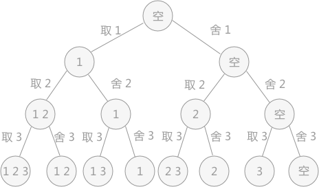
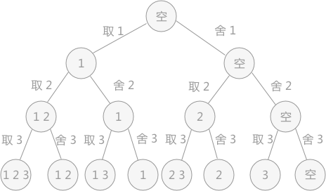

回溯算法详解
回溯算法，又称为“试探法”。解决问题时，每进行一步，都是抱着试试看的态度，如果发现当前选择并不是最好的，或者这么走下去肯定达不到目标，立刻做回退操作重新选择。这种走不通就回退再走的方法就是回溯算法。
例如，在解决列举集合 {1,2,3} 中所有子集的问题中，就可以使用回溯算法。从集合的开头元素开始，对每个元素都有两种选择：取还是舍。当确定了一个元素的取舍之后，再进行下一个元素，直到集合最后一个元素。其中的每个操作都可以看作是一次尝试，每次尝试都可以得出一个结果。将得到的结果综合起来，就是集合的所有子集。
实现代码为：
回溯法从问题本身出发，寻找可能实现的所有情况。和穷举法的思想相近，不同在于穷举法是将所有的情况都列举出来以后再一一筛选，而回溯法在列举过程如果发现当前情况根本不可能存在，就停止后续的所有工作，返回上一步进行新的尝试。
递归是从问题的结果出发，例如求 n！，要想知道 n！的结果，就需要知道 n*(n-1)! 的结果，而要想知道 (n-1)! 结果，就需要提前知道 (n-1)*(n-2)!。这样不断地向自己提问，不断地调用自己的思想就是递归。
回溯和递归唯一的联系就是，回溯法可以用递归思想实现。

图1 状态树
回溯算法的求解过程实质上是先序遍历“状态树”的过程。树中每一个叶子结点，都有可能是问题的答案。图 1 中的状态树是满二叉树，得到的叶子结点全部都是问题的解。
在某些情况下，回溯算法解决问题的过程中创建的状态树并不都是满二叉树，因为在试探的过程中，有时会发现此种情况下，再往下进行没有意义，所以会放弃这条死路，回溯到上一步。在树中的体现，就是在树的最后一层不是满的，即不是满二叉树，需要自己判断哪些叶子结点代表的是正确的结果。
例如，在解决列举集合 {1,2,3} 中所有子集的问题中，就可以使用回溯算法。从集合的开头元素开始，对每个元素都有两种选择：取还是舍。当确定了一个元素的取舍之后，再进行下一个元素，直到集合最后一个元素。其中的每个操作都可以看作是一次尝试，每次尝试都可以得出一个结果。将得到的结果综合起来，就是集合的所有子集。
实现代码为：
#include <stdio.h>
//设置一个数组，数组的下标表示集合中的元素，所以数组只用下标为1，2，3的空间
int set[5];
//i代表数组下标，n表示集合中最大的元素值
void PowerSet(int i,int n){
//当i>n时，说明集合中所有的元素都做了选择，开始判断
if (i>n) {
for (int j=1; j<=n; j++) {
//如果树组中存放的是 1，说明在当初尝试时，选择取该元素，即对应的数组下标，所以，可以输出
if (set[j]==1) {
printf("%d ",j);
}
}
printf("\n");
}else{
//如果选择要该元素，对应的数组单元中赋值为1；反之，赋值为0。然后继续向下探索
set[i]=1;PowerSet(i+1, n);
set[i]=0;PowerSet(i+1, n);
}
}
int main() {
int n=3;
for (int i=0; i<5; i++) {
set[i]=0;
}
PowerSet(1, n);
return 0;
}
运行结果：
1 2 3
1 2
1 3
1
2 3
2
3
1 2
1 3
1
2 3
2
3
回溯VS递归
很多人认为回溯和递归是一样的，其实不然。在回溯法中可以看到有递归的身影，但是两者是有区别的。回溯法从问题本身出发，寻找可能实现的所有情况。和穷举法的思想相近，不同在于穷举法是将所有的情况都列举出来以后再一一筛选，而回溯法在列举过程如果发现当前情况根本不可能存在，就停止后续的所有工作，返回上一步进行新的尝试。
递归是从问题的结果出发，例如求 n！，要想知道 n！的结果，就需要知道 n*(n-1)! 的结果，而要想知道 (n-1)! 结果，就需要提前知道 (n-1)*(n-2)!。这样不断地向自己提问，不断地调用自己的思想就是递归。
回溯和递归唯一的联系就是，回溯法可以用递归思想实现。
回溯算法的实现过程
使用回溯法解决问题的过程，实际上是建立一棵“状态树”的过程。例如，在解决列举集合{1,2,3}所有子集的问题中，对于每个元素，都有两种状态，取还是舍，所以构建的状态树为：
图1 状态树
回溯算法的求解过程实质上是先序遍历“状态树”的过程。树中每一个叶子结点，都有可能是问题的答案。图 1 中的状态树是满二叉树，得到的叶子结点全部都是问题的解。
在某些情况下，回溯算法解决问题的过程中创建的状态树并不都是满二叉树，因为在试探的过程中，有时会发现此种情况下，再往下进行没有意义，所以会放弃这条死路，回溯到上一步。在树中的体现，就是在树的最后一层不是满的，即不是满二叉树，需要自己判断哪些叶子结点代表的是正确的结果。
关注公众号「站长严长生」，在手机上阅读所有教程，随时随地都能学习。内含一款搜索神器，免费下载全网书籍和视频。

微信扫码关注公众号